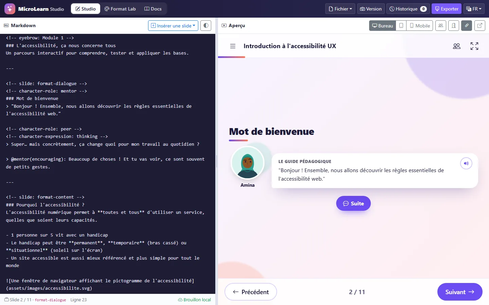
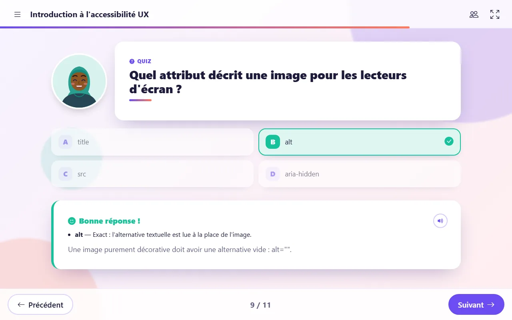
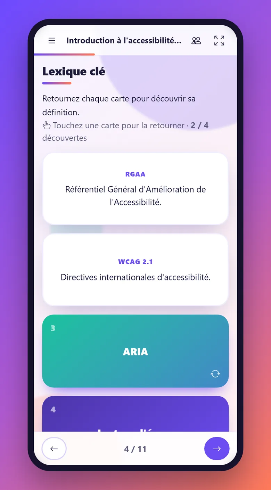
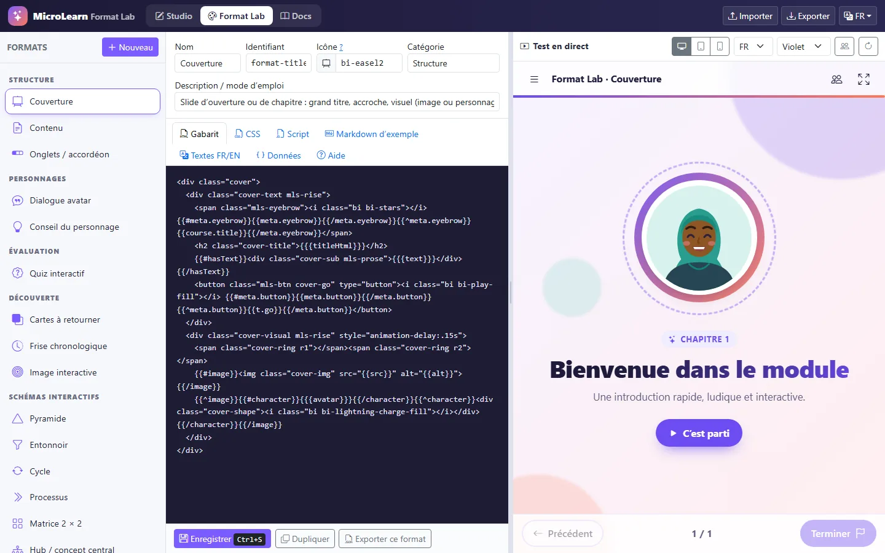

Documentation
MicroLearn transforme un cours écrit en Markdown en module interactif, consultable sur ordinateur et sur mobile, même hors-ligne.
1. Préparer son cours avec une IA
Pas besoin d'apprendre la syntaxe : n'importe quelle IA (ChatGPT, Claude, Gemini, Mistral, Copilot…) peut mettre votre cours au bon format. Donnez-lui simplement l'adresse de la page d'instructions pour IA :
docs/skill.md
Voir la page
Puis écrivez par exemple :
[collez ici votre cours, votre plan ou vos notes]
L'IA répond avec un bloc de Markdown : copiez-le, collez-le dans le Studio, vérifiez l'aperçu, ajustez si besoin. Pour un cours en anglais, utilisez la version anglaise de la page.
2. Démarrer en 3 étapes
- Écrivez (ou collez) votre cours dans l'éditeur de gauche du Studio. Vous pouvez aussi glisser-déposer un fichier
.mdau-dessus de l'éditeur. Un cours d'exemple est chargé au premier lancement. - Vérifiez le rendu dans l'aperçu à droite. Basculez entre les vues bureau, tablette et mobile. L'aperçu suit la slide où se trouve votre curseur. Le bouton Insérer une slide ajoute un modèle prêt à remplir.
- Exportez avec le bouton Exporter et partagez le module.

3. La syntaxe en bref
- Le fichier commence par un en-tête entre deux lignes
---(titre, langue, description, personnages…). - Les slides sont séparées par une ligne
---. - Chaque slide commence par
<!-- slide: format-… -->et contient un titre###. - Le reste est du Markdown classique :
**gras**,*italique*, listes-, liens, images.
--- title: "Mon module" description: "Ce que l'apprenant va découvrir." duration: 10 min lang: fr theme: violet characters: mentor: "Le Guide" peer: "Le Collègue" --- <!-- slide: format-title --> <!-- character-role: mentor --> ### Bienvenue ! Une phrase d'accroche. --- <!-- slide: format-flashcards --> ### Lexique - **Mot** :: Sa définition. - **Autre mot** :: Une autre définition.
Langue du module : lang: fr ou lang: en. Elle traduit les boutons et consignes vus par les apprenant·es (Suivant, Valider, Réessayer…) et sélectionne les voix de lecture. L'interface du Studio et du Format Lab se change, elle, avec le bouton FR/EN en haut à droite.
Thèmes de couleurs : violet, ocean, sunset, forest, night. La référence complète de la syntaxe est la page pour les IA.
Réglages facultatifs de l'en-tête
Ils adaptent le lecteur à votre public : une visite guidée entre collègues ne se présente pas comme un module noté.
color: "#1f7a8c" # couleur principale (les fonds en dérivent)
accent: "#e9b44c" # couleur secondaire
address: tu # tutoiement dans les textes du lecteur
score: off # pas de note sur l'écran de fin
exit: "../index.html" # bouton « Quitter » dans la barre du haut
exit-label: "Revenir à l'outil"
labels: # remplacer n'importe quel texte du lecteur
p.slide: "Étape {n}"
p.endTitle: "Visite terminée !"
next:
title: "La suite"
label: "Ouvrir la suite" # texte du bouton (défaut « Module suivant »)
| Champ | Effet |
|---|---|
color, accent | Couleurs principale et secondaire (ex. "#1f7a8c"). Les fonds, le texte et les ombres en dérivent : plus de violet résiduel. |
address: tu | Tutoiement dans les consignes, l'écran d'accueil et l'écran de fin (français seulement). Par défaut : vouvoiement. |
labels | Remplace un texte de l'interface : une ligne clé: "texte" par texte (voir les clés ci-dessous). Les marques {n} et {total} sont remplacées par les nombres. |
score: off | Pas de note sur l'écran de fin : les quiz restent corrigés, et en SCORM la note est toujours transmise à la plateforme. |
next → label | Texte du bouton qui ouvre le module suivant (avec url). |
exit, exit-label | Adresse et texte d'un bouton « Quitter » dans la barre du haut (icône seule sur téléphone) et d'un lien sous l'écran d'accueil. Adresse relative à la page du module ; dans l'aperçu du Studio, le lien s'ouvre dans un nouvel onglet. |
jobs | Métiers des personnages (voir § 5). |
dialogue-autoplay | on (défaut) ou off : défilement des dialogues façon messagerie (format-sms, voir § 4). |
Clés utiles pour labels : p.slide (« Slide {n} »), p.slideOf (« Slide {n} sur {total} »), p.slidesCount (« {n} slides »), p.resume (« Reprendre (slide {n}) »), p.moduleEyebrow (« Module de formation »), p.chooseCast, p.chooseCastHint, p.start (« Commencer »), p.endTitle (« Module terminé ! »), p.endThanks, p.review (« Revoir le module »), p.upNext (« À suivre »), p.goNext (« Module suivant »), p.exit (« Quitter »), p.exitWelcome (« Quitter sans commencer »), p.prev, p.next, p.finish. Les textes des formats aussi : more (bouton « Suite » des dialogues) ou, pour un seul format, format-quiz.validate. Liste complète : js/core/i18n.js, et les textes de chaque format dans le Format Lab.
Sur téléphone (moins de 640 px de large), le bouton plein écran est masqué pour laisser la place aux autres.
4. Les formats de slides
| Format | Pour… | Syntaxe clé |
|---|---|---|
format-title | ouvrir le module ou un chapitre | titre + accroche |
format-content | exposer une notion | texte, listes, image |
format-dialogue | mettre en situation | > réplique, > @peer: … |
format-sms | un échange façon messagerie | comme le dialogue : > @peer(happy): … |
format-prenom | demander le prénom | > question, puis {prenom} dans le texte |
format-menu | un parcours à la carte | - [📌 Partie](#id) :: description |
format-conseil | donner une astuce | personnage + texte |
format-quiz | évaluer | - [x] juste, - [ ] faux :: explication |
format-flashcards | le vocabulaire | - **Terme** :: définition |
format-timeline | dates, étapes | - **1999** :: événement |
format-tabs | plusieurs facettes | sous-titres #### |
format-hotspots | explorer une image | - X,Y :: **Titre** :: texte |
bêta Nouveau : 7 schémas interactifs (puzzle, pyramide, entonnoir, cycle, processus, matrice, concept central). Découvrir les formats bêta
Dialogue façon messagerie (format-sms) : les répliques arrivent une à une, précédées de « … » et de l'avatar de la personne qui écrit. Chacune reste affichée selon sa longueur (0,7 s + 0,26 s par mot, entre 1,4 et 8 s ; une fois et demie plus quand la voix lit les répliques). Boutons Pause / Reprendre et Tout afficher. Le défilement démarre après l'écran d'accueil et s'arrête quand on quitte la slide.
- Défilement automatique par défaut ;
<!-- autoplay: off -->sur une slide, oudialogue-autoplay: offdans l'en-tête, le fait passer « au clic » : un bouton Suite fait apparaître la réplique suivante. - L'apprenant·e peut choisir Automatique ou Au clic dans ses réglages (bouton ) : ce choix est mémorisé et passe avant celui du cours (accessibilité).
Prénom (format-prenom) : le personnage pose la question (citation >), l'apprenant·e tape son prénom ou continue sans. Le prénom reste dans son navigateur (rien n'est envoyé) et sert à tous les cours. Il remplace ensuite {prenom} partout dans le texte des slides ; préférez {, prenom} : « Bienvenue{, prenom} ! » donne « Bienvenue, Camille ! », ou « Bienvenue ! » sans prénom.
Parcours à la carte (format-menu) : chaque élément - [📌 Libellé](#id) :: description devient un bouton qui mène à la partie commençant par la slide <!-- branch: id -->.
<!-- slide: format-menu --> <!-- id: menu --> <!-- character-role: mentor --> ### Par quoi on commence ? > Choisis une partie, je t'y emmène. (1re visite) > On continue ? Les parties vues sont cochées. (au retour) > Tu as tout vu, bravo ! (tout est vu) - [🛎️ L'accueil](#accueil) :: Là où tout commence - [🚐 Les réservations](#reservations "featured") :: Mise en avant
- Une partie s'arrête à la slide qui ouvre une autre partie, à un menu ou à une slide
<!-- id: … -->. À sa fin, le bouton devient Retour au menu ; « Précédent » au début d'une partie y ramène aussi. - Les parties vues sont cochées (mémorisé dans le navigateur) ; sur le menu, « Suivant » mène à la première partie pas encore vue.
- J'ai terminé (ou « Suivant » quand tout est vu) mène à la slide
<!-- id: fin -->, sinon à l'écran de fin. - Sous-menu : un
format-menuqui porte lui-même<!-- branch: … -->et<!-- parent: menu -->(bouton Retour au menu). Une partie revient par défaut au dernier menu qui la précède ;<!-- parent: id -->en choisit un autre. - Partout dans un cours, un lien
[texte](#id)mène à la slide<!-- id: … -->ou<!-- branch: … -->.


5. Les personnages
Dans votre cours, vous ne choisissez pas un personnage précis mais un rôle (mentor, peer…), déclaré dans l'en-tête. Au lancement du module, chaque apprenant·e choisit l'apparence de ses personnages parmi un répertoire varié (genre, âge, origine, handicap).
Dans une slide : <!-- character-role: mentor --> et <!-- character-expression: happy -->. Expressions : neutral, happy, encouraging, thinking, surprised, concerned. Dans l'aperçu du Studio, le bouton permet de tester d'autres personnages.
Côtés des dialogues : le premier rôle déclaré dans characters parle toujours à gauche, les autres à droite, d'une slide à l'autre (dans format-dialogue comme dans format-sms).
Métiers : chaque personnage du répertoire a un métier (« Ingénieure ») et des traits visibles (« porte un hijab »). Pour coller à votre cours, donnez la liste des métiers du domaine : ils sont répartis entre les personnages, toujours de la même façon, et les traits restent affichés. Exemple : jobs: [bibliothécaire, magasinier/magasinière, médiateur/médiatrice numérique] (forme féminine après « / »). Avec jobs: off, seuls les traits sont affichés.
6. Lecture à voix haute
Pour les apprenant·es qui préfèrent écouter plutôt que lire, les textes longs peuvent être lus par la synthèse vocale du navigateur (aucune connexion nécessaire avec les voix installées sur l'appareil). C'est un outil de confort : il ne remplace pas les lecteurs d'écran et n'interfère pas avec eux.
- Sur l'écran d'accueil (bouton ), l'apprenant·e choisit une voix pour chaque personnage et pour le narrateur, avec un bouton Tester, et règle la vitesse.
- Quatre modes : Désactivée, Sur l'icône seulement (par défaut), Quand j'ouvre un élément (point d'une image, carte, étape, onglet, réplique, correction de quiz), Automatique (lecture dès l'affichage de la slide).
- L'icône apparaît sur les textes de plus de 120 caractères et sur toutes les répliques de dialogue. Le bouton en haut arrête la lecture.
Réglages enseignant : dans l'en-tête, lang: fr, audio-min: 80 (seuil) ou audio: off ; dans une slide, <!-- audio: all --> ou <!-- audio: off -->.
7. Parcours et chapitres
Chapitres (un seul fichier) : chaque slide format-title ouvre un chapitre ; on peut aussi écrire <!-- chapter: Nom --> sur n'importe quelle slide. L'apprenant·e voit « Chapitre 2/3 » sous le titre, des repères sur la barre de progression et un sommaire groupé par chapitre.
Parcours (plusieurs modules, un fichier chacun) : ajoutez dans l'en-tête de chaque module :
course: "Accessibilité numérique" # nom du parcours, identique partout module: 2 # position de ce module modules: 4 # nombre total de modules next: title: "Les contrastes" url: "../les-contrastes/index.html" # facultatif, pour le web
- L'accueil et la barre du haut affichent « Module 2 / 4 » ; l'écran de fin montre les modules terminés et le module suivant.
- Web, clé USB, intranet : exportez chaque module en ZIP et placez les dossiers côte à côte ; le nom du dossier correspond au titre du module (ex.
les-contrastes), d'oùurl: "../les-contrastes/index.html". - SCORM : le lien est ignoré, l'écran de fin invite à revenir sur la plateforme, qui gère l'enchaînement des modules.
- Les modules terminés sont mémorisés dans le navigateur de l'apprenant·e.
8. Versions et sauvegarde
- Le brouillon est enregistré automatiquement dans votre navigateur.
- Version (ou Ctrl+S) prend une photo de votre cours. L' Historique permet de revenir en arrière.
- Ces données restent dans ce navigateur, sur cet ordinateur. Pour une vraie sauvegarde, utilisez Fichier → Télécharger le Markdown.
9. Exporter le module
- Paquet ZIP : un dossier à décompresser ; ouvrez
index.html. Idéal pour une clé USB, un intranet ou un site web. - Fichier HTML unique : tout dans un seul fichier, facile à envoyer.
- SCORM 1.2 : à importer dans un LMS (Moodle…). La progression et le score sont transmis.
Les modules exportés fonctionnent sans Internet. L'export lui-même nécessite que le Studio soit ouvert via une adresse web (http/https), pas en double-cliquant sur le fichier.
10. Vue apprenant et partage
La page vue apprenant (view.html) ouvre un cours directement en mode diaporama, sans le Studio. Trois façons d'y donner accès :
- Lien complet : dans le Studio, Fichier → Lien « vue apprenant ». Le cours entier est compressé dans le lien, sans rien envoyer à un serveur. Idéal pour un cours court ; au-delà d'environ 8 000 caractères, certaines messageries risquent de couper le lien.
- Adresse d'un fichier :
view.html?src=https://…/mon-cours.md. Le fichier doit être sur le même site, ou sur un site qui autorise sa lecture (GitHub, par exemple, viaraw.githubusercontent.com). - Code court : déposez le fichier dans le dossier
courses/sous le nomid_1234_accessibilite-fr.md, puis partagezview.html?c=1234. Rien d'autre à faire : sur GitHub, la liste des cours (courses/index.json) se met à jour toute seule après chaque commit, et le cours est trouvé même avant. Dans le Studio, Fichier → Lien court (code du cours) donne ce lien pour le cours ouvert (reconnu par le nom du fichier ouvert ou par son titre) ; s'il n'est pas encore dans le dossier, il propose le prochain code libre et un bouton pour télécharger le fichier sous le bon nom.
Sans paramètre, la page affiche un champ pour saisir un code ou une adresse, une zone pour déposer un fichier .md et la liste des cours du dossier. Par sécurité, le HTML écrit dans le cours y est nettoyé (pas de script).
11. Créer ses propres formats
Le Format Lab permet de modifier les formats existants ou d'en créer de nouveaux (gabarit HTML, CSS, script, textes FR/EN), avec un test en direct sur bureau et mobile et dans chaque langue. Les formats enregistrés apparaissent aussitôt dans le Studio et sont inclus dans les exports. L'onglet Aide du Lab détaille tout ce qui est disponible.
